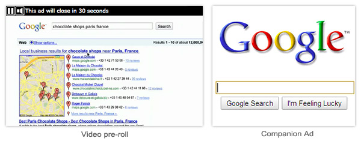

This document explains how to setup advertisements managed by Google's DFP Ad Server in the Ads edition of JW Player. See Advertising In JW Player for a general overview of all supported advertising options.
JW Player's built-in support for Interactive Media Ads (IMA) allows publishers to run in-video advertisements served up by Google's Dart For Publishers and AdSense For Video servers. The latest version (IMA3) and playback in Flash rendering mode are supported. HTML5 support is not yet available.

Above is a screenshot of a basic pre-roll video with HTML companion ad. At large, the following types of advertisements are supported:
To configure ads using IMA, include an advertising block with the client option set to googima. Here is a basic setup, setting a DFP tag as pre-roll video:
jwplayer('myElement').setup({
primary: 'flash',
file: 'assets/myVideo.mp4',
advertising: {
client: 'googima',
schedule: {
adbreak1: {
offset:'pre',
tag: 'http://ad.doubleclick.net/pfadx/ABC;sz=300x300;ord=45028616;dcmt=text/xml'
}
}
}
});
In addition to the advertising options, don't forget to set primary to flash. This because IMA is not yet supported in HTML5. See Embedding JW Player
The schedule is the place where advertisements are getting targeted to certain positions on the video timeline. Above example loads just a single ad in the pre (pre-roll) position, but multiple ads can be scheduled to various positions in the video. Do this by simply setting multiple ads inside the block. Note they each must have a unique name (without spaced or special chars).
For each ad, the following properties are available:
Here is an example IMA schedule that includes a pre-roll ad, post-roll ad and an ad that appears after 2 minutes:
jwplayer('myElement').setup({
primary: 'flash',
file: 'assets/myVideo.mp4',
advertising: {
client: 'googima',
schedule: {
break1: {
offset:'pre',
tag: 'http://ad.doubleclick.net/pfadx/ABC;sz=300x300;ord=4502861;dcmt=text/xml'
},
break2: {
offset:'02:00',
tag: 'http://ad.doubleclick.net/pfadx/XYZ;sz=300x300;ord=994752;dcmt=text/xml'
},
break3: {
offset:'post',
tag: 'http://ad.doubleclick.net/pfadx/HAL;sz=300x300;ord=8923503;dcmt=text/xml'
}
}
}
});
Note that playlists are not supported with Google IMA. The ad schedule is applied to the first video in a playlist only.
JW Player supports displaying companions for IMA ads. The following is needed:
Here is a full example, containing all three pieces:
<div id="videoplayer"></div>
<div id="companion"></div>
<script type="text/javascript">
jwplayer("videoplayer").setup({
primary: 'flash',
file: 'assets/myVideo.mp4',
advertising: {
client: 'googima':
schedule: {
myPreroll: {
tag: 'http://ad.doubleclick.net/pfadx/AS;sz=300x300;ord=5036130;dcmt=text/xml',
position: 'pre',
targets: ['companion']
}
}
}
});
function syncRoadBlock(id, ad, ty, ct, wi, he) {
if (ty == "StaticResource") {
document.getElementById(id).innerHTML = "<a target='_blank' href='" + ct +
"'><img src='" + ad + "' width='" + wi + "' height='" + he + "'/></a>";
} else if (ty == "HTMLResource") {
document.getElementById(id).innerHTML = ad;
}
};
</script>
Note the JavaScript function has to be called syncRoadBlock() and has to be available for IMA companion ads to work.
In addition to the schedule there are two options that can be set. They impact only the linear pre/mid/postrolls:
Here's an example setup with a customized ad message:
jwplayer('myElement').setup({
primary: 'flash',
file: 'assets/myVideo.mp4',
advertising: {
client: 'googima',
admessagedynamic: 'Only XX more seconds until the show starts...',
admessagedynamickey: 'XX',
schedule { // schedule info }
}
});